BlendReal® - Cinematic Pipeline UE5
1.Why Choose BlendReal?
🔶 Free Updates — One-time purchase includes all future updates at no extra cost (new features, improvements, and bug fixes).
🔶 Technical Support — Direct help with installation issues, unexpected behavior, workflow problems, or Blender → Unreal integration.
🔶 Official Releases — Always receive the official version maintained and distributed by the developer.
🔶 Complete Documentation — Full documentation covering installation, setup, usage, troubleshooting, and FAQs.
🔶 Continuous Development — Your purchase helps fund ongoing development, testing, and optimization of the product.
🔶 Your Feedback Matters — Report bugs, suggest improvements, or request features. User feedback directly influences future development priorities.
🔶 One Purchase, Ongoing Value — You're not just buying a file. Your license includes the product, updates, documentation, and support throughout the continued development of BlendReal®.
2.BlendReal® - Cinematic Pipeline UE5
✦Automated Blender → Unreal Engine 5 Cinematic Pipeline
✦13 Steps. 3 Integrated Systems. 1 Complete Pipeline.📌 BlendReal® transforms the Blender → Unreal Engine 5 process into a step-by-step guided workflow, taking you from a Blender Scene to a cinematic-ready Unreal Engine Scene without requiring you to master complex technical setups in Unreal Engine.
📌 13-Step Guided Workflow — BlendReal® guides you through every step, from a one-time, per-UE-install Remote Execution setup, enabling Movie Render Queue, creating PBR/Glass Master Materials, setting up the Master Sequence, exporting Meshes & Animation, configuring Camera/FPS/Draw Distance, Two Sided, saving Level + Content, all the way to VDB export and Cinematic Setup. You don't need to memorize countless settings or search for individual steps in UE.
📌 More than just an Export tool. BlendReal® is a pipeline consisting of 3 integrated systems that communicate with each other
▣ Blender → Unreal Pipeline— Export, Camera, Animation, Mesh Prep, Materials, Sequencer, Render-to-MP4
▣ UDS — Cinematic Sky & Lighting— Sky, Time of Day, Lighting, Fog & Presets
▣ VDB — Cinematic Volume— VDB, SVT, Volume, Materials & Lighting📌 From a single Sidebar (N-panel) in Blender, BlendReal® automates tasks that would normally require manual setup in UE: FBX, Camera, Animation, Mesh cleanup, Materials, Sequencer, Sky, Lighting, VDB, Movie Render Queue, and even converting your rendered sequence to a shareable MP4.
📌 You don't need to be an Unreal Engine expert. If you already have Blender skills and only basic Unreal Engine knowledge, BlendReal® provides a clear workflow to guide you step by step from bringing your scene into UE to setting up a cinematic render.
📌 For experienced Unreal Engine users, BlendReal® helps eliminate repetitive tasks, batch processing, and manual setup — especially useful for Wide Shot / Extreme Wide Shot scenes with multiple meshes, cameras, animations, lighting, and VDBs.
📌 13 Steps. 3 Integrated Systems. 1 Complete Blender → Unreal Pipeline.
📌 From Blender Scene to Cinematic Render — Without the Complex Setup.
3.What's new?
V1.0.1
🔷 BlendReal - Main Pipeline
- 🌐 Global Remote Execution — enable once per UE install and it applies to every project opened with that UE, instead of repeating setup per project; original settings are backed up automatically and can be restored
- 🗂️ Split configuration — global settings (paths, ffmpeg, etc.) are saved once, while per-project settings now live in a dedicated file next to each
.blend, so switching between multiple.blend/UE projects no longer carries over the wrong values- 💾 Export / Import Config Backup — save a backup copy of your configuration to any folder (cloud, USB, etc.) and restore it any time
- 🔍 Detect Running UE Project — auto-fills the
.uprojectpath by scanning for an already-open UE Editor- 📳 Add Camera Shake — one-click handheld-style camera shake (amplitude / frequency / pulses) layered on top of existing camera animation, non-destructive and re-runnable
- 🧰 Mesh Utilities panel — new one-click tools: Create Proxy Collision (Convex Hull) auto-named for UE to detect, Convert Triangles to Quads, Join Meshes, and Split Joined Mesh by Loose Parts
- 🕘 Folder Name / Subfolder history — remembers previously used export folder and subfolder-sequence names for quick reuse
- 🎬 Explicit Master Sequence tools — dedicated Create/Update Master Sequence and Bind Camera to Camera Cuts Track buttons, plus a Refresh Camera List
- 🪟 Reworked Glass Material system — auto-detects glass materials, supports Global Defaults + Per-Material Override, adds Apply Glass Material, Select All Glass Objects, Update Glass Reflection, Force UDS Sky Reflection, and an optional Fix Glass Flicker in Movie Render Queue fix
- 🔍✅ Two Sided — Dry Run then Apply — preview how many Materials/Material Instances would be affected before committing, instead of applying blind
- 🗂️✔ Save All — Level + Content — one click forces Always Loaded on every actor and saves the entire Level + Content (including External Actors)
- 🎞️ Convert Render Sequence to MP4 (ffmpeg) — turn your Movie Render Queue EXR/PNG sequence directly into an MP4, with correct Linear EXR → sRGB color conversion, quality presets, and an optional glass-edge fringing fix
- 🚀 Live Trail updates — push new Niagara trail parameter or position values to already-spawned ships in UE without re-exporting (requires the BlendReal_SpaceshipTraffic add-on)
🔷 UDS - Ultra Dynamic Sky Control
- 🎨 13 built-in cinematic sky presets, now themed around story beats (Hope, Loss, Stillness, Beginning, Tension, Reminiscence...) — instantly choose a ready-made mood that matches the emotional tone of your shot
- Complete Cinematic Setup: light color temperature, intensity, volumetric scattering, shadow distance, fog density, and fog falloff
- Save/load/back up your custom presets
- Export sky parameters to the UE project as JSON, import them back from UE into Blender, or apply them directly via Remote Execution
🔷 VDB - Volume Pipeline
- 3-step workflow: Load VDB into Blender → Send VDB Files to UE Project (copy frames + write a transform manifest) → Place VDB in UE Scene via Remote Execution — automatically convert to SVT (Sparse Volume Texture), create a Material Instance, spawn a Heterogeneous Volume actor, and automatically assign Material/Animation/Transform
- Supports both full VDB animation sequences and a single static frame
- VDB Fill Light — dedicated Directional Light for illuminating VDBs without affecting the environment
- VDB Shadow Light — dedicated Directional Light for casting VDB shadows onto the ground without interfering with UDS Sun/Moon shadows
- Point Light follows VDB, with true two-way synchronization with UE — reads Intensity/Location animation directly from the UE Sequencer into Blender
- Apply Flicker to Light — fire/explosion flickering effect using a Noise Modifier (Scale/Strength/Depth) combined with an uneven Auto-ramp (fast rise, slow fall)
- Create Material Presets: 🔥 Fire / 💨 Smoke / ☁️ Cloud — Density/Albedo/Blackbody/Temperature (Kelvin) parameters tuned for physically accurate fire color
- Cinematic Setup — quick setup dialog for Console Variables (Heterogeneous Volumes render quality), DirectionalLight, VDB Material, ExponentialHeightFog — now auto-detects an existing Ultra Dynamic Sky actor to avoid double clouds/fog conflicts instead of just warning about them
- 🏛️ Cinematic Setup (Architecture / Landscape) — a new lightweight version of Cinematic Setup for non-VDB scenes: DirectionalLight + Fog only, no VDB-only console variables
- Clean Orphaned Bindings — one-click cleanup of leftover Sequencer bindings if UE crashed during a previous Place VDB run
- Save/load/delete custom presets for Cinematic Setup, Material, and Point Light
4.System Requirements
- Operating System: Windows 10/11 64-bit
- Blender: 4.5, 5.0, or 5.2 (LTS)
- Unreal Engine: UE 5.6+, 5.7+, or 5.8+. However, VDB shadow functionality may not work correctly in UE 5.6 and 5.7, and shadows may be missing. UE 5.8+ provides proper VDB shadow support for both static VDBs and VDB animation sequences.
- Remote Execution features (directly applying Materials, Sky, Camera, etc. to UE) require Python Remote Execution to be enabled in the UE project (
Edit > Project Settings > Plugins > Python). BlendReal® includes a built-in, one-time setup guide, so you don't need to configure it manually.- Converting rendered sequences to MP4 requires an ffmpeg executable path configured in Settings.
5.Installation
- In Blender, go to Edit > Preferences > Add-ons
- Click Install from Disk... and select the downloaded
.zipfile- Check the box next to BlendReal® - Pipeline UE5 in the Add-ons list to enable the add-on
- Open the Sidebar in the 3D Viewport (press
N) and find the BlendReal® tab- If Blender reports that the add-on is incompatible, check that your installed Blender version is included in the supported versions listed under System Requirements

6.Updating to a New Version
- Before updating, back up your Presets and personal configuration (use Export Config Backup in the Settings box).
- Remove the current version from Preferences > Add-ons → expand BlendReal® → click Remove.
- Install the latest
.zipfile following the installation steps above, then restart Blender.
7.Features - 3 Tools, 1 Sidebar Tab
🔷 BlendReal - Main Pipeline
- Bake Animation tools:
🔸 Create a Camera with a Track To Constraint in one click, automatically bake the Camera + Animation before export.
🔸 📳 Add Camera Shake — layer a short handheld-style shake (Amplitude / Frequency / Pulses) on top of the camera's existing Location animation, starting at the current frame. Re-running it on an overlapping range replaces the previous shake automatically.
🔸 Bake animation for meshes with Constraints (Track To, Follow Path, Damped Track, etc.) with a single click.
🔸 Restore Baked Constraint to restore the original constraint and adjust the camera/mesh movement at any time.

- 🧰 Mesh Utilities — one-click cleanup tools for exported meshes:
🔸 Batch Apply Rotation (preserving Location + Scale) and Apply Scale (preserving Location + Rotation).
🔸 Apply MNEMO Naming Convention — batch-rename selected meshes with an Island_/Building_/Landscape_ prefix + original name + index.
🔸 Fix Normals Per UV Island (radial outward) — more precise than standard Recalculate Normals.
🔸 🧱 Create Proxy Collision (Convex Hull) — duplicates the selected mesh and replaces each separate piece with its own Convex Hull, named so UE auto-detects it, enables Collision, and hides it from render. A Voxel Remesh fallback is also available.
🔸 ◻️ Convert Triangles to Quads — merges adjacent triangle faces back into quads, fixing visible diagonal seams (e.g. on glass panes).
🔸 🔗 Join Meshes and ✂️ Split Joined Mesh (by Loose Parts) — quickly combine or separate mesh pieces without leaving the panel.

- UE Project Setup Checklist (13 steps, follow in order) — walks you from a bare UE project to a fully configured cinematic scene:
🔸 🌐 1. Enable Global Remote — one-time, per-UE-install Remote Execution setup; applies to every project opened with that install, original settings backed up automatically, with a Restore Remote to Original option.
🔸 2. Open / Reopen UE — launches UE directly from Blender, or opens UE's Project Browser if no project is set yet.
🔸 3. Enable Movie Render Queue Plugin, with an optional Glass Materials toggle that reveals all glass-related settings only when needed.
🔸 4. Create PBR / Glass Master Material (run once per project).
🔸 5–6. Close and Reopen UE so the new plugin/materials take effect.
🔸 7. Export Methods — pick one of 3 workflows (see below), with 🕘 folder-name history, Nanite Settings, and a per-export Two Sided option.
🔸 🎬 8. Create/Update Master Sequence (camera + meshes) and Bind Camera to Camera Cuts Track.
🔸 9. Set Filmback + FPS + Max Draw Distance (see dialog below).
🔸 10. Two Sided — Dry Run then Apply.
🔸 11. Save All — Level + Content.
🔸 12. Optional Add-ons (Trail Package) and 13. Export VDB + Cinematic Setup (VDB tab).

- 💾 Settings box — one place to configure and protect your setup:
🔸 Paste or auto-detect the.uprojectpath from a currently running UE Editor.
🔸 Save / Reload Config, plus Export Config Backup and Import Config Backup to move your configuration between machines or back it up externally.
🔸 Global paths (UE Editor, ffmpeg, Trail package folder) are shared across projects; per-project settings (Master Sequence path, MRQ/MP4 folders, FPS, color mode...) are saved next to each individual.blendfile, so different projects never overwrite each other's values.

- Batch Export FBX:
🔸 With Animation via Sequencer or static FBX, with automatic Nanite Settings applied on import (Enable Nanite Support, Explicit Tangents, Lerp UVs, Shape Preservation = Preserve Area, Preserve Area for Opacity) and Apply Two Sided — all in one click.
🔸 With full PBR Texture support (Base Color, Metallic, Roughness, Normal, Specular, Emission, Alpha, Ambient Occlusion).
🔸 There are 3 Export workflows, with 🕘 remembered folder/subfolder history so you don't have to retype names for recurring shots:

◇ Export to Unreal: Used for small projects when you want UE to automatically create a BlenderExports folder containing assets exported from Blender and imported into UE.

◇ Add New/Update Folder and Export: Most commonly used when you want to clearly organize and manage multiple scenes/shots within a project.

◇ Import into Folder: Used when a folder already exists in UE and you want to export additional assets directly into that folder.

- 🎬 Master Sequence & Camera tools:
🔸 Create / Update Master Sequence — merges related Level Sequences (camera + meshes, whether exported separately or together).
🔸 Bind Camera to Camera Cuts Track and Refresh Camera List — scans all CineCameraActors in the current UE Level and binds the one you pick.

- Automatically create dedicated Mesh, Camera, and VDB folders in the UE Outliner and organize the corresponding actors automatically.

- Batch export Niagara System Trail values and import them into UE with a single click, plus live updates without re-export: push new Trail Params or Trail Positions to already-spawned ships. This feature requires the BlendReal_SpaceshipTraffic add-on

- Set Filmback + FPS + Max Draw Distance — a single dialog to batch-configure:
🔸 Filmback/Sensor (16:9 Landscape or 9:16 Portrait for Shorts/Reels) and Focal Length for all CineCameraActors.
🔸 Master Sequence FPS and Max Draw Distance, with Force Always Loaded to prevent World Partition culling during rendering.
🔸 Motion Blur reduction and locked Manual Exposure, to prevent Auto Exposure from flickering the frame.
🔸 Batch Emissive Brightness for materials BlendReal previously baked emissive into (e.g. glowing windows).

- 🪟 Glass Material system:
🔸 Create Glass Master Material (run once) and Apply Glass Material to instantly turn the active slot into glass.
🔸 Auto-detects glass materials by their Transmission value, with Global Defaults and Per-Material Override (tint, roughness, thickness, IOR...).
🔸 Select All Glass Objects to quickly re-select every glass mesh in the scene.
🔸 Update Glass Reflection and Force UDS Sky Reflection — refresh the Sky Light cubemap and correct the UDS Sky Light Mode on the currently open UE level, without re-exporting.
🔸 Optional Fix Glass Flicker in Movie Render Queue — removes flicker on glass surfaces during MRQ renders (trade-off: glass stops reflecting off-screen objects).

- Two Sided workflow:
🔸 A safer per-export Two Sided option inside Export Methods, applied only to the meshes you're exporting right now.
🔸 A global Dry Run (preview how many Materials/Material Instances would be affected) followed by Apply, for when you need to fix Two Sided across the whole project at once.

- 🗂️✔ Save All — Level + Content — one click forces Always Loaded on every actor in the level and saves the entire Level + Content, including External Actors, so nothing is left unsaved before closing UE.

- 🎞️ Convert Render Sequence to MP4 (ffmpeg) — turn the EXR/PNG image sequence rendered by Movie Render Queue directly into a shareable MP4, without leaving Blender:
🔸 Auto-detects the MRQ output folder from your project, or point to a custom one.
🔸 Correct Linear EXR → sRGB color conversion so the result matches the UE Editor Preview, VLC, and After Effects.
🔸 Quality presets (Draft / Standard / High / Custom CRF) and an optional fix for glass/transparent edge fringing.
🔸 Delete Rendered Sequence afterward to free up disk space once you've confirmed the MP4 looks right.

🔷 UDS - Ultra Dynamic Sky Control
- 13 built-in cinematic sky presets, now written around story beats to match your narrative's mood — from Golden Hour — Hope to Overcast Heavy — Loss, Dust Storm — Violent Loss, Blue Moon — Tension, and more — instantly choose a ready-made mood instead of dialing in dozens of sliders

- Complete Cinematic Setup: light color temperature, intensity, volumetric scattering, shadow distance, fog density, and fog falloff
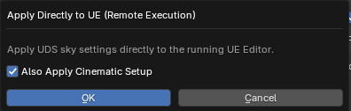
- Save, load, and back up your custom presets
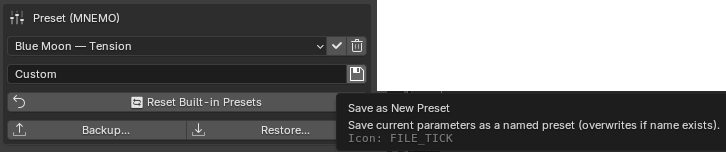
- Automatically export sky parameters to the UE project as JSON, import them back from UE into Blender, or apply them directly via Remote Execution
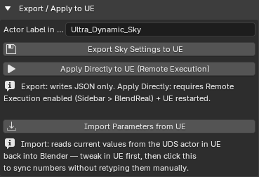
🔷 VDB - Volume Pipeline
- 3-step workflow: Load VDB into Blender → Send VDB Files to UE Project (copy frames + write a transform manifest) → Place VDB in UE Scene via Remote Execution — automatically convert to SVT (Sparse Volume Texture), create a Material Instance, spawn a Heterogeneous Volume actor, and automatically assign Material/Animation/Transform
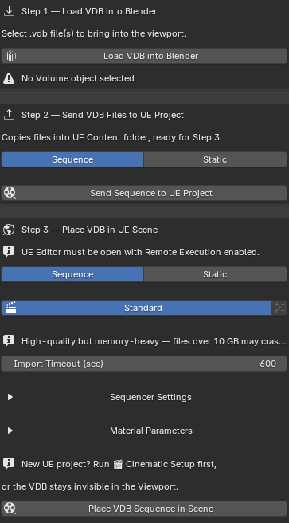
- Supports both full VDB animation sequences and a single static frame
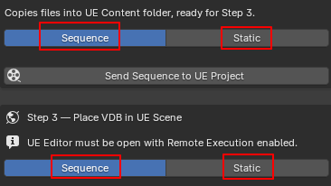
- VDB Fill Light — dedicated Directional Light for illuminating VDBs without illuminating the surrounding environment. Its intensity is automatically interpolated along a Day/Night curve based on the Ultra Dynamic Sky's Time of Day, with manual override available
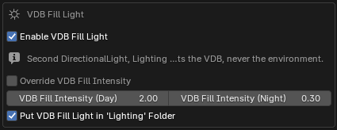
- VDB Shadow Light — dedicated Directional Light for casting VDB shadows onto the ground without casting shadows from the surrounding environment, without interfering with UDS Sun/Moon shadows
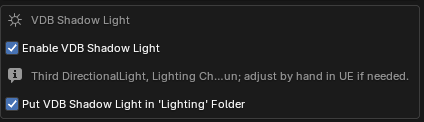
- Point Light follows the VDB, with true two-way synchronization with UE — reads Intensity/Location animation directly from the UE Sequencer into Blender
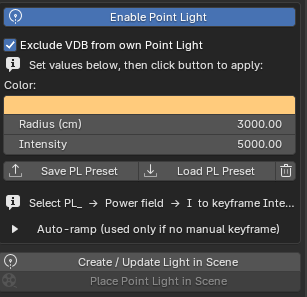
- Apply Flicker to Light — fire/explosion flickering effect using a Noise Modifier (Scale/Strength/Depth) combined with an uneven Auto-ramp (fast rise, slow fall)
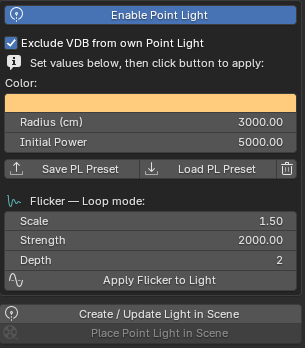
- Create your own custom material presets: 🔥 Fire / 💨 Smoke / ☁️ Cloud — Density/Albedo/Blackbody/Temperature (Kelvin) parameters tuned for physically accurate fire color
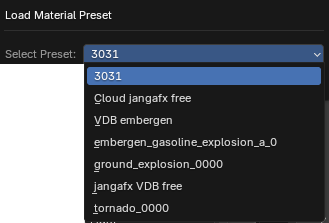
- Cinematic Setup — quick setup dialog for Console Variables (Heterogeneous Volumes render quality), DirectionalLight, VDB Material, ExponentialHeightFog — auto-detects an existing Ultra Dynamic Sky actor in the level to avoid double clouds/fog instead of just warning about it. Includes DirectionalLight sync from Blender (color + rotation), using a physically-verified sun-path formula for accurate shadow matching.
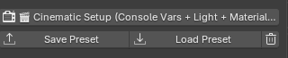
- 🏛️ Cinematic Setup (Architecture / Landscape) — a new, lightweight one-shot version of Cinematic Setup for scenes that don't use VDB: sets up only the DirectionalLight and ExponentialHeightFog, with none of the VDB-only console variables or lighting

- Clean Orphaned Bindings — clean up leftover Sequencer bindings with a single click if UE crashed during a previous Place VDB run

- Save/load/delete custom presets for Cinematic Setup, Material, and Point Light
8.License & Source Code
- You should have received a copy of the GNU General Public License along with this program. If not, see http://www.gnu.org/licenses/.
- The installation package includes the add-on's Python (
.py) source files packaged in a.ziparchive.
9.Support
For any questions or update requests, please contact us through the BlendReal® Discord Support channel.
10.FAQ
✅ Does the add-on require Unreal Engine to use?
Not all features require Unreal Engine. Some features can be used directly in Blender. Features that use Remote Execution to directly apply Materials, Sky, Camera, and other settings to Unreal Engine require an Unreal Engine project to be open with Python Remote Execution enabled using the automatic, one-time setup button provided in the add-on UI.

✅ Does the add-on automatically update when a new Blender version is released?
No. When a new Blender version is released outside the list of supported versions, a compatible add-on version will be released through the same purchase link. You can download the new version once the add-on has been updated.
✅ Does the add-on support all Blender versions?
No. The add-on only supports the Blender versions listed in the product's System Requirements. Newer Blender versions will be supported when a compatible add-on version is released.
✅ Is there a limit to the number of computers I can install the add-on on?
The license is based on the number of Seats (users), not the number of computers. One Seat is intended for one user and may not be shared with another person. The user may install the add-on on their own computers for their work.
✅ Do I receive updates after purchasing the add-on?
Yes. Updates and compatibility fixes will be provided to customers who have purchased the add-on through the product page.
✅ Do I have to pay for updates?
No. Updates and bug fixes released for the current product version will be provided free of charge to customers who have purchased the add-on. If the product price is adjusted in the future, the new price will only apply to new purchases and will not affect customers who purchased the product previously.
✅ How can I know when a new update is available?
Updates will be released on the product page. Simply revisit your purchase link to check for and download the latest version.
✅ How do I update the add-on?
Before updating, we recommend backing up your Presets and personal configuration (via Export Config Backup). Then remove the current version of the add-on and install the latest version from the product page.